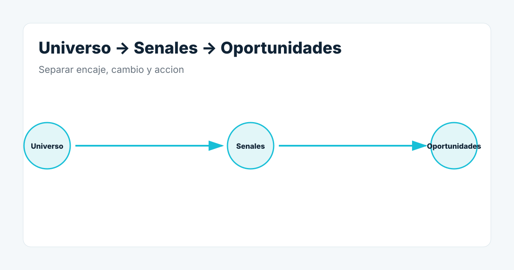

Buscar por sector no basta
Muchos OEM trabajan para varios sectores. Busca tambien por tipo de maquina, proceso, capacidad, mercados servidos, feria, asociacion, cliente de referencia y tecnologia.
Las ferias son un mapa de mercado
Los expositores revelan fabricantes especializados que pueden pasar desapercibidos en busquedas generales.
Despues llega la pregunta comercial
Esta desarrollando una maquina nueva, contratando, entrando en otro mercado o cambiando plataforma? Ahi aparecen las senales.